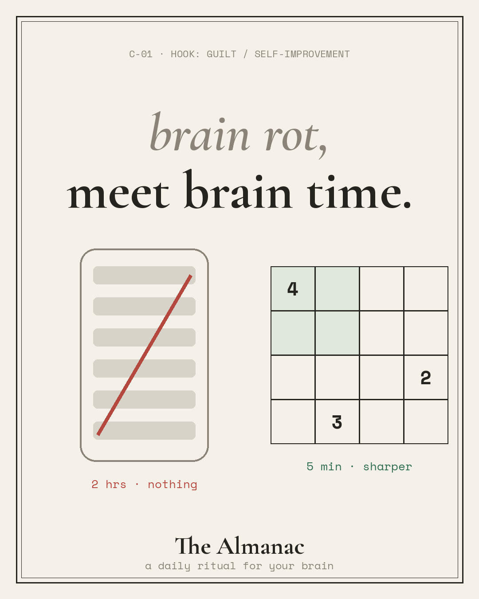
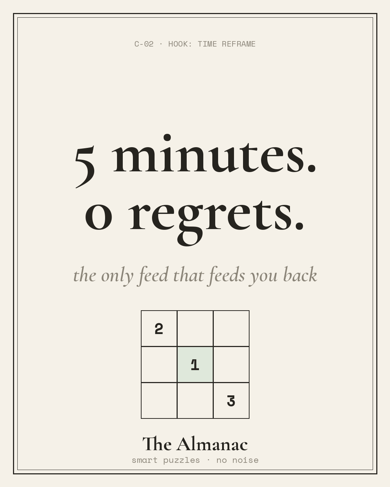
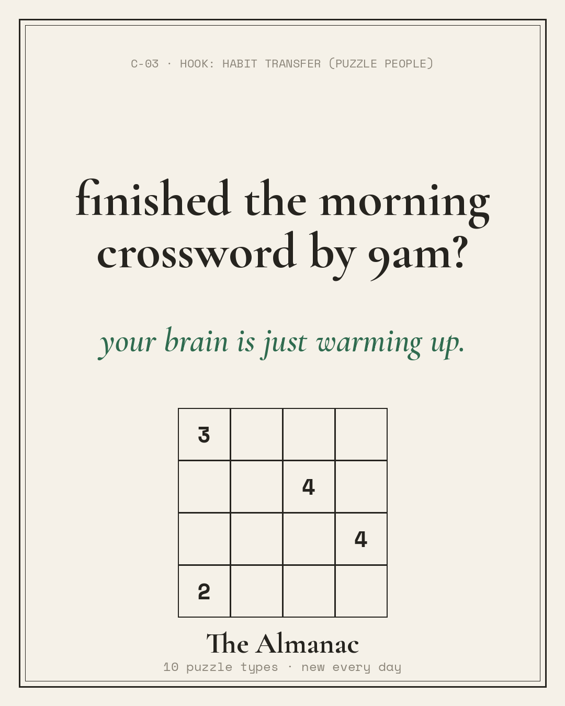
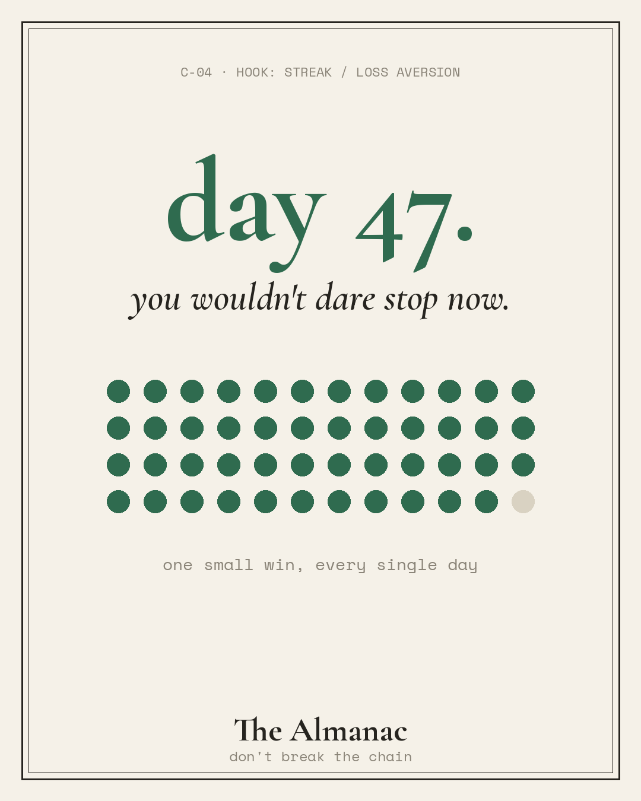
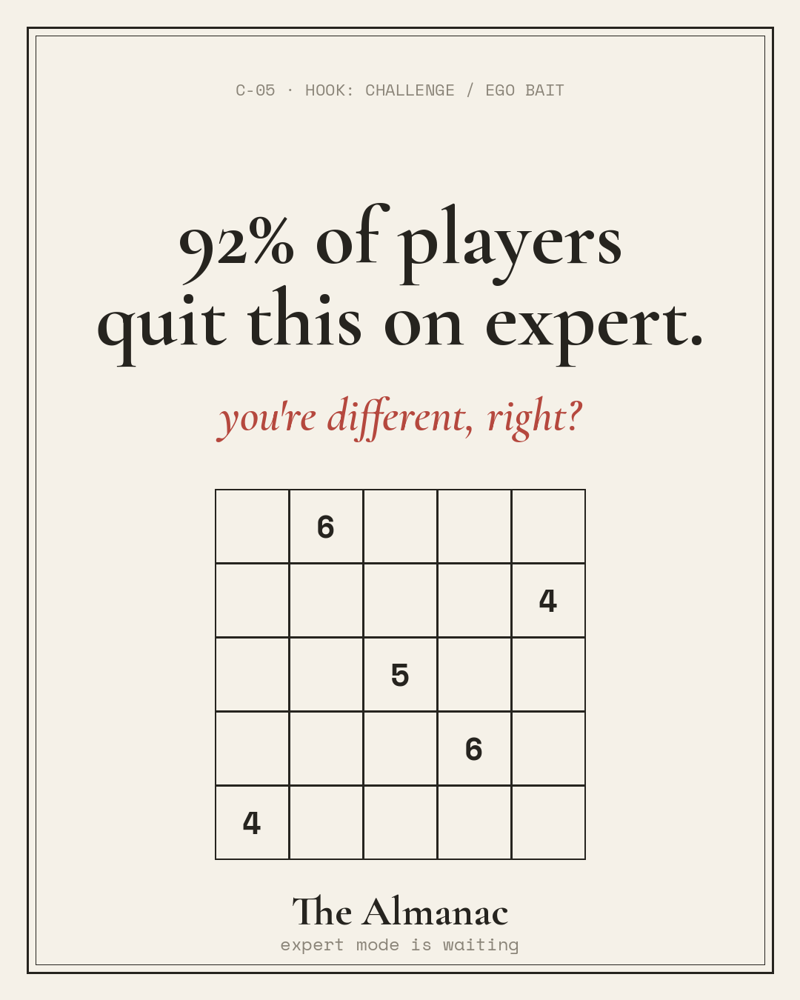
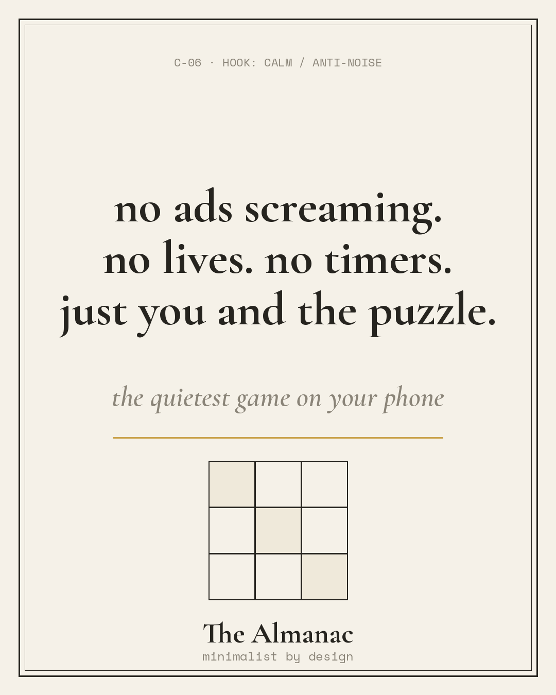
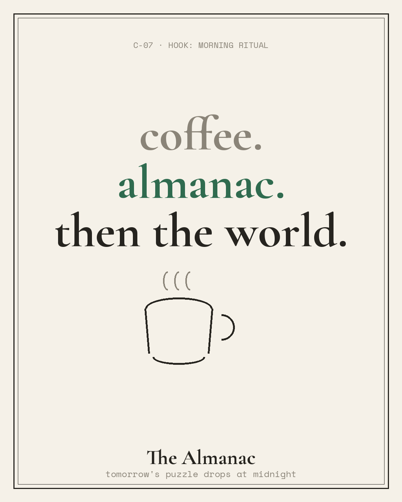
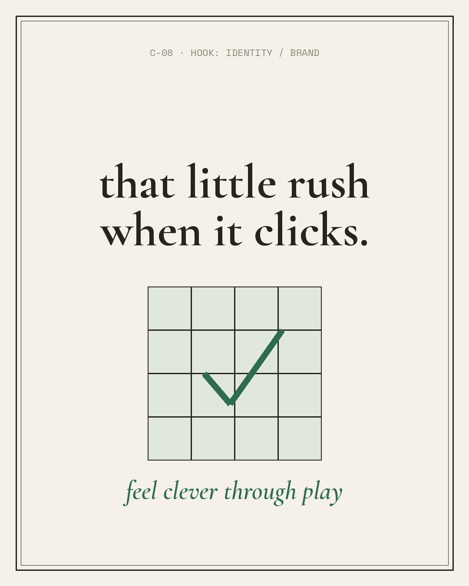
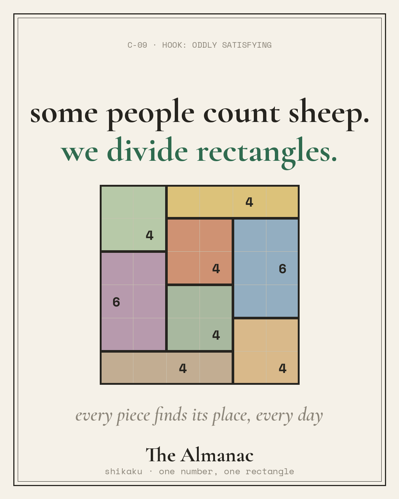
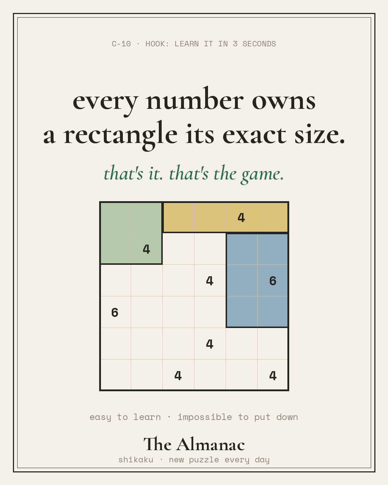

Ten ad concepts, a playable, a video ad, and a testing plan for Cortex Studio's daily puzzle game. Built from real player language found in App Store reviews, designed to be shipped fast, killed fast, and iterated.
UNSOLICITED CONCEPT WORK BY KEELIN McLOUGHLIN · NOT AFFILIATED WITH VOODOO / CORTEXEvery creative angle below comes from something real players actually said in reviews, or from how the app positions itself (Health & Fitness, not Games: it sells self-improvement, not entertainment).
Ten statics in a shared visual system (almanac paper, ink, one accent, with Shikaku providing the color), each testing one hypothesis. Rough on purpose: the goal is signal, not polish.










How I would run this batch on Meta and AppLovin as a first sprint, with kill criteria agreed before launch so decisions are fast and unemotional.
| Stage | Setup | Decision rule |
|---|---|---|
| Week 1 · signal | All 10 statics, one broad ad set per network, equal budget, App Store CPP variants matched to C-01/C-03/C-05 angles | Kill anything below the batch's median IPM after ~2k impressions each; promote top 3 by CPI |
| Week 2 · iterate | 3 winners × 3 variations each (new headline, new visual, new format: static → 15s motion cut in CapCut) | Variation beats parent CPI by 10%+ or dies; playable enters test against best static |
| Week 3 · quality | Winning angle gets retention read: D1/D7 by creative, payer rate for Zen Mode | Cheap installs that don't retain get down-weighted; the metric that matters is cost per retained player, not CPI alone |